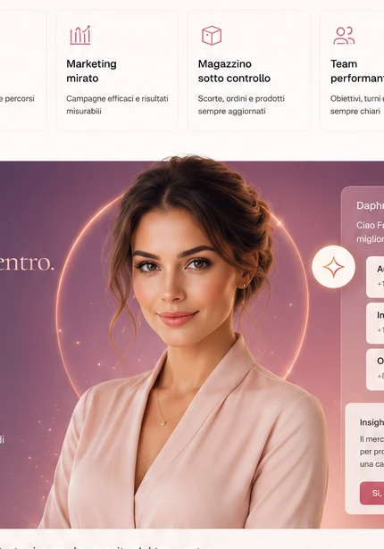

Legge ciò che accade
Agenda, clienti, vendite, stock e performance alimentano una visione unica.
Osserva, ricorda, collega e suggerisce. Daphne DAS è progettata per conoscere il tuo centro e aiutarti a decidere meglio.

Agenda, clienti, vendite, stock e performance alimentano una visione unica.
Priorità, anomalie e opportunità emergono senza cercare nei report.
Azioni concrete, contestualizzate e pronte da eseguire.
Ogni cliente e preferenza entra nella memoria operativa del centro.